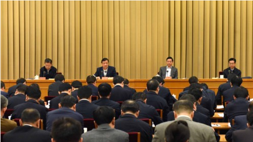
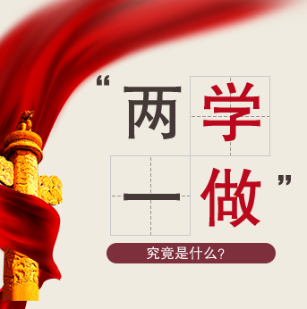
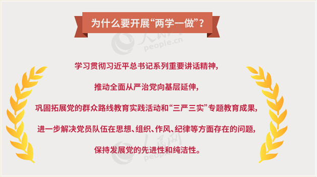

首页
上级精神
党章党规
系列讲话
集团部署
活动态动
4月6日，“两学一做”学习教育工作座谈会在北京召开。中共中央政治局常委、中央书记处书记刘云山出席座谈会并讲话。

4月6日，“两学一做”学习教育工作座谈会在北京召开。中共中央政治局常委、中央书记处书记刘云山出席座谈会并讲话。
4月6日，“两学一做”学习教育工作座谈会在北京召开。中共中央政治局常委、中央书记处书记刘云山出席座谈会并讲话。
军队“两学一做”学习教育工作座谈会 召开 许其亮出席并讲话
军队“学党章党规、学系列讲话，做合格党员”学习教育工作座谈会15日在京召开。会议深入学习贯彻党中央、习主席决策指示，围绕扎实开展军队学习教育进...
重要文件
·
中办印发《方案》 在全体党员中开展“两学一做”学习教育
·
关于在全体党员中开展“学党章党规、学系列讲话，做合格党员”学习教育方案


上级精神
更多>>
集团部署
更多>>
中国共产党章程
党内法规制度
学习贯彻习近平总书记
系列重要讲话精神
党章党规
更多>>
系列讲话
更多>>